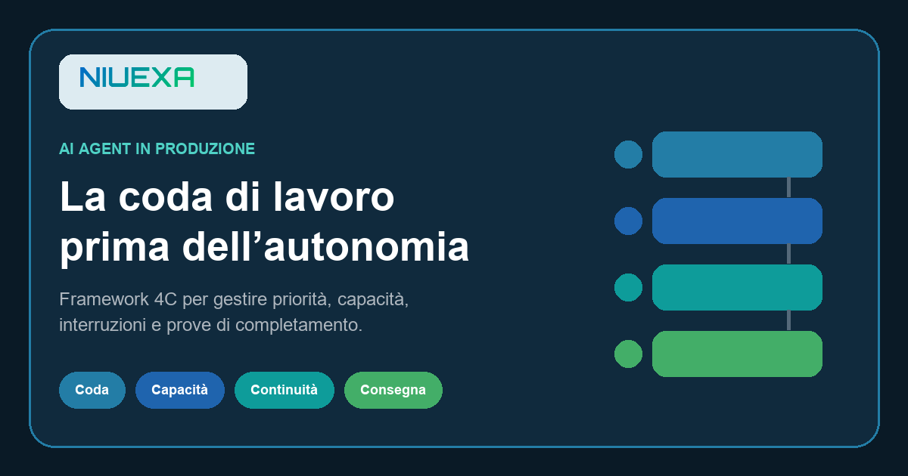

Risposta rapida: che cosa serve a un AI agent per lavorare in produzione?
Un AI agent operativo deve ricevere unità di lavoro identificabili, ordinarle con regole aziendali, rispettare limiti di capacità, salvare checkpoint e chiudere ogni attività con una prova verificabile. Il framework 4C organizza questi requisiti in Coda, Capacità, Continuità e Consegna.
La demo esegue una richiesta; il servizio gestisce il lavoro nel tempo
Nel percorso ideale arriva una richiesta, il modello interpreta il testo, usa uno strumento e produce un risultato. Il processo reale è diverso: più richieste competono tra loro, alcuni dati mancano, un sistema risponde tardi, una persona deve approvare e un’attività può restare sospesa tra due passaggi. Se ogni esecuzione viene trattata come una conversazione isolata, l’agent non governa un processo: accumula tentativi.
Progettare il turno operativo significa rendere visibile che cosa è entrato, che cosa è in lavorazione, che cosa è bloccato, chi deve intervenire e quale evidenza chiude il caso. L’obiettivo non è massimizzare le azioni avviate, ma aumentare il lavoro utile concluso senza trasferire il collo di bottiglia a sistemi, budget o revisori umani.
Il NIST AI Risk Management Framework collega governance, ruoli, monitoraggio e gestione lungo il ciclo di vita. Non prescrive il framework 4C, che è una guida Niuexa, ma rafforza un principio: responsabilità e controlli devono vivere nel processo, non in una dichiarazione astratta sull’affidabilità del modello.
Le 4C: Coda, Capacità, Continuità, Consegna
1. Coda: quale lavoro entra e con quale priorità?
Ogni richiesta dovrebbe diventare un’unità riconoscibile con ID, obiettivo, priorità, dati minimi, stato e owner. La priorità deve derivare da regole aziendali — scadenza, rischio, valore, livello di servizio — non dal tono urgente di un messaggio. La coda deve anche rifiutare o sospendere gli ingressi incompleti, invece di costringere il modello a inventare il contesto.
2. Capacità: quanto lavoro può sostenere il sistema?
Il software non si stanca, ma API, budget, database e revisori hanno limiti. Il capitolo di Google SRE sulla gestione del sovraccarico osserva che un servizio affidabile deve accettare il carico che può elaborare e degradare o rifiutare il resto in modo controllato. Per un workflow agentico questo significa limiti di concorrenza, quote per tipo di attività, timeout, capacità riservata ai casi prioritari e una regola di pausa quando l’arretrato cresce.
3. Continuità: da quale stato riparte dopo un’interruzione?
Un checkpoint registra l’ultimo passaggio certo, l’evidenza ottenuta e la prossima azione consentita. Senza checkpoint, un riavvio può duplicare email, record o ordini. Le operazioni con effetti esterni richiedono inoltre una chiave idempotente o un identificativo stabile: ripetere la stessa richiesta non deve creare un secondo effetto quando l’intento non è cambiato.
4. Consegna: quale prova dimostra che il lavoro è finito?
Una bozza creata non equivale a un messaggio inviato; un upload accettato non equivale a un contenuto pubblicato. La consegna deve leggere lo stato dal sistema di destinazione e conservare una prova proporzionata: ID provider, URL live, destinatario effettivo, versione del documento, timestamp o esito approvato. Solo allora il caso può uscire dalla coda.
Tre esiti tecnici da distinguere prima di riprovare
Il retry automatico è utile solo quando l’azione è certamente fallita prima dell’accettazione. L’AWS Builders’ Library descrive il ruolo delle API idempotenti nel rendere sicuri i nuovi tentativi, ma chiarisce anche che l’idempotenza è un contratto progettuale: non basta ripetere una chiamata e sperare che il risultato sia unico.
| Stato osservato | Azione corretta | Evidenza richiesta |
|---|---|---|
| Rifiuto certo | Correggere la causa e riprovare secondo policy | Errore prima dell’accettazione |
| Esito certo | Non ripetere; verificare e chiudere | ID o stato letto dal destinatario |
| Stato incerto | Bloccare il retry e riconciliare | Ricerca per chiave idempotente o controllo umano |
Questa distinzione deve essere codificata nello stato della coda, non lasciata alla memoria dell’operatore. Un campo “errore” generico non basta: il prossimo comportamento dipende dal momento in cui l’operazione si è interrotta e dalla possibilità di osservare il sistema esterno.
Metriche: misurare il lavoro chiuso, non l’attività generata
Il numero di chiamate al modello è una misura di consumo, non di valore. Una dashboard operativa dovrebbe mostrare almeno volume in ingresso, arretrato per priorità, età del lavoro più vecchio, tempo di ciclo, quota di casi bloccati, tasso di rilavorazione, saturazione dei revisori e percentuale di attività chiuse con prova.
Google SRE definisce il monitoraggio come raccolta e visualizzazione di dati quantitativi sul comportamento del sistema e include la lunghezza delle code tra le informazioni utili in una dashboard. Per una PMI non serve replicare un’architettura SRE: è sufficiente trasformare i segnali in decisioni. Se l’arretrato prioritario cresce, si riduce l’ingresso; se aumentano gli stati incerti, si corregge la riconciliazione; se i revisori sono saturi, non si aumenta l’autonomia per nascondere il problema.
Le soglie devono avere owner e risposta. “Tempo medio alto” è informazione; “se il lavoro prioritario supera quattro ore, sospendi le attività non urgenti e avvisa il process owner” è una regola operativa. Le soglie iniziali sono ipotesi da tarare con il pilota, non benchmark universali.
Un pilota in sei passaggi per una PMI
- Scegli un solo workflow. Preferisci volume reale, azioni reversibili, owner disponibile e dati accessibili.
- Definisci l’unità di lavoro. Stabilisci ID, dati minimi, obiettivo, priorità e criterio di rifiuto.
- Disegna gli stati. Usa pochi stati non ambigui: ricevuto, pronto, in lavorazione, in attesa, da riconciliare, verificato, annullato.
- Imposta capacità e backpressure. Limita concorrenza, consumo e carico umano; decidi che cosa rallentare per primo.
- Aggiungi checkpoint e prova. Salva l’ultimo stato certo e definisci l’evidenza esterna necessaria alla chiusura.
- Testa il percorso non ideale. Simula richieste simultanee, dati mancanti, timeout, approvazione assente e risposta provider illeggibile.
Un esempio semplice è il lead-to-follow-up. Ogni lead entra con ID, fonte e dati minimi; i duplicati vengono bloccati; la capacità rispetta il carico del team commerciale; un checkpoint separa validazione, CRM e messaggio; l’invio non viene ripetuto dopo un timeout ambiguo; il caso si chiude solo dopo la lettura di destinatario, stato e prossimo owner.
Se il team non sa rispondere a “quale attività è più vecchia, perché è ferma e che cosa proverà la sua chiusura?”, l’agent è ancora una demo su dati reali. Aggiungere un modello più potente non risolve questo vuoto operativo.
Fonti e perimetro
La relazione tra governance, responsabilità, monitoraggio e gestione continua è allineata al NIST AI Risk Management Framework Core. I principi su capacità e sovraccarico derivano da Google SRE: Handling Overload; le note su monitoraggio e code da Monitoring Distributed Systems. La gestione dei retry è contestualizzata con AWS Builders’ Library: Making retries safe with idempotent APIs. Il framework 4C, la matrice e il pilota sono guida operativa Niuexa; non costituiscono garanzia di prestazione, parere legale o valutazione di cybersecurity.
FAQ sulla coda di lavoro degli AI agent
Che cos’è una coda di lavoro per un AI agent?
È il registro ordinato delle unità di lavoro che l’agent può accettare, con identificativo, priorità, dati minimi, stato, owner e criterio di chiusura.
Quali sono le 4C di un AI agent operativo?
Coda, Capacità, Continuità e Consegna. Descrivono come il sistema riceve il lavoro, limita il carico, riparte dopo un’interruzione e prova il completamento.
Come si evita che un AI agent esegua due volte la stessa azione?
Con chiavi idempotenti, checkpoint e riconciliazione dello stato esterno. Un esito incerto non deve attivare un nuovo tentativo automatico.
Quali KPI misurano la capacità di un AI agent?
Arretrato per priorità, età del lavoro più vecchio, tempo di ciclo, quota di blocchi, tasso di rilavorazione, saturazione dei revisori e attività chiuse con prova.
Da quale workflow dovrebbe partire una PMI?
Da un solo flusso con volume reale, owner disponibile, dati accessibili, azioni reversibili e un criterio verificabile di completamento.